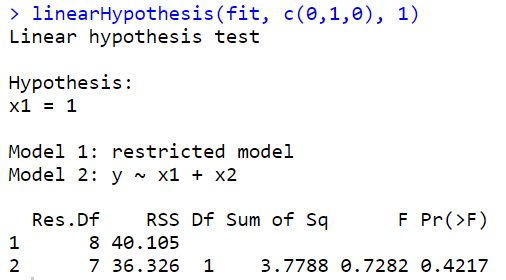
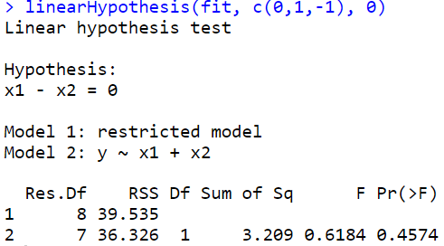
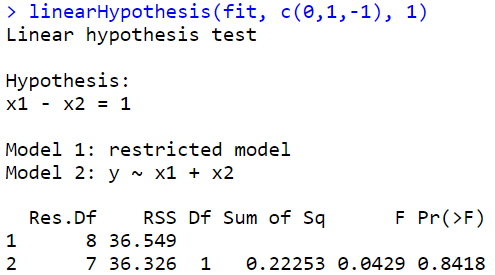
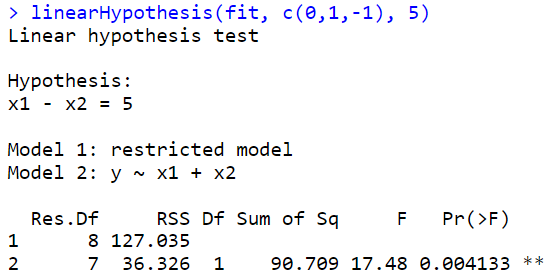

library(MASS)
library(lmtest)Loading required package: zoo
Attaching package: ‘zoo’
The following objects are masked from ‘package:base’:
as.Date, as.Date.numeric
해당 자료는 전북대학교 이영미 교수님 2023응용통계학 자료임
library(MASS)
library(lmtest)Loading required package: zoo
Attaching package: ‘zoo’
The following objects are masked from ‘package:base’:
as.Date, as.Date.numeric
data(Boston)
head(Boston)| crim | zn | indus | chas | nox | rm | age | dis | rad | tax | ptratio | black | lstat | medv | |
|---|---|---|---|---|---|---|---|---|---|---|---|---|---|---|
| <dbl> | <dbl> | <dbl> | <int> | <dbl> | <dbl> | <dbl> | <dbl> | <int> | <dbl> | <dbl> | <dbl> | <dbl> | <dbl> | |
| 1 | 0.00632 | 18 | 2.31 | 0 | 0.538 | 6.575 | 65.2 | 4.0900 | 1 | 296 | 15.3 | 396.90 | 4.98 | 24.0 |
| 2 | 0.02731 | 0 | 7.07 | 0 | 0.469 | 6.421 | 78.9 | 4.9671 | 2 | 242 | 17.8 | 396.90 | 9.14 | 21.6 |
| 3 | 0.02729 | 0 | 7.07 | 0 | 0.469 | 7.185 | 61.1 | 4.9671 | 2 | 242 | 17.8 | 392.83 | 4.03 | 34.7 |
| 4 | 0.03237 | 0 | 2.18 | 0 | 0.458 | 6.998 | 45.8 | 6.0622 | 3 | 222 | 18.7 | 394.63 | 2.94 | 33.4 |
| 5 | 0.06905 | 0 | 2.18 | 0 | 0.458 | 7.147 | 54.2 | 6.0622 | 3 | 222 | 18.7 | 396.90 | 5.33 | 36.2 |
| 6 | 0.02985 | 0 | 2.18 | 0 | 0.458 | 6.430 | 58.7 | 6.0622 | 3 | 222 | 18.7 | 394.12 | 5.21 | 28.7 |
보스턴 집값 데이터 이 데이터는 보스턴 근교 지역의 집값 및 다른 정보를 포함한다.
MASS 패키지를 설치하면 데이터를 로딩할 수 있다.
- B보스턴 근교 506개 지역에 대한 범죄율 (crim)등 14개의 변수로 구성
• crim : 범죄율
• zn: 25,000평방비트 기준 거지주 비율
• indus: 비소매업종 점유 구역 비율
• chas: 찰스강 인접 여부 (1=인접, 0=비인접)
• nox: 일산화질소 농도 (천만개 당)
•
rm: 거주지의 평균 방 갯수 ***• age: 1940년 이전에 건축된 주택의 비율
• dis: 보스턴 5대 사업지구와의 거리
• rad: 고속도로 진입용이성 정도
• tax: 재산세율 (10,000달러 당)
• ptratio: 학생 대 교사 비율
• black: 1000(B − 0.63)2, B: 아프리카계 미국인 비율
•
lstat: 저소득층 비율 ****•
medv: 주택가격의 중앙값 (단위:1,000달러 당) 반응변수
pairs(Boston[,which(names(Boston) %in%
c('medv', 'rm', 'lstat'))],
pch=16, col='darkorange')
마지막 행을 봐보자. 맨아래 왼쪽의 X축은 rm, Y축은 medv를 의미하고, 맨아래의 중간의 x축은 lstat를 의미한다.
rm이 클수록 집값이 증가하고(직선관계처럼 보인다)
lstat가 높아질수록 집값은 떨어지는 경향이 있다(곡선관계처럼 보인다. 처음엔 뚝 떨어지다가 천천히 감소)
rm과 lstat의 다중공산성을 봐야해! > 맨위 가운데 그림을 봐보자..
# pairs(Boston, pch=16, col='darkorange')
cor(Boston[,which(names(Boston) %in%
c('medv', 'rm', 'lstat'))])| rm | lstat | medv | |
|---|---|---|---|
| rm | 1.0000000 | -0.6138083 | 0.6953599 |
| lstat | -0.6138083 | 1.0000000 | -0.7376627 |
| medv | 0.6953599 | -0.7376627 | 1.0000000 |
rm과 medv는 양의 상관관계
lstat와 mdev는 음의 상관관계
rm과 lstat는 음의 상관관계
fit_Boston<-lm(medv~rm+lstat, data=Boston)
summary(fit_Boston)
Call:
lm(formula = medv ~ rm + lstat, data = Boston)
Residuals:
Min 1Q Median 3Q Max
-18.076 -3.516 -1.010 1.909 28.131
Coefficients:
Estimate Std. Error t value Pr(>|t|)
(Intercept) -1.35827 3.17283 -0.428 0.669
rm 5.09479 0.44447 11.463 <2e-16 ***
lstat -0.64236 0.04373 -14.689 <2e-16 ***
---
Signif. codes: 0 ‘***’ 0.001 ‘**’ 0.01 ‘*’ 0.05 ‘.’ 0.1 ‘ ’ 1
Residual standard error: 5.54 on 503 degrees of freedom
Multiple R-squared: 0.6386, Adjusted R-squared: 0.6371
F-statistic: 444.3 on 2 and 503 DF, p-value: < 2.2e-16\(y=\beta_0 + \beta_1 x_1 + \beta_2 x_2 + \epsilon , \ \epsilon\) ~ \(N(0,\sigma^2)\)
모형을 적합하라는 것은, \(\hat \beta_0, \hat \beta_1, \hat \beta_2\)를 구해서 \(\hat y=\)꼴로 적어주기
- summary 결과 해석
회귀직선의 유의성에 대한 가설검정이다.
\(H_0: \beta_1=\beta_2=0\) vs \(H_1: \beta_1 \neq 0\) or \(\beta_2 \neq 0\)
F-statistic: 444.3, F=MSR/MSE, p-value: < 2.2e-16:p-value가 아주 작으므로 \(H_0\)를 기각할 수 있다. 즉 회귀직선은 유의하다.
Residual standard error: 5.54 = \(\sqrt{MSE} = \sqrt{\widehat \sigma^2} = \widehat \sigma^2\)
Pr(>|t|):양측 검정에 대한 유의성 검정
Estimate 추정량, \(\hat \beta_0=-1.35827, \hat \beta_1=5.09479, \hat \beta_2=-0.64236\)
Std. Error = \(s.e(\widehat \beta_i) = \dfrac{\sigma^2}{c_{ii}}\) 이고, \(\widehat {s.e}(\widehat \beta_i)\sqrt{\dfrac{\widehat \sigma^2}{c_{ii}}}\)
t value는 \(t_0 = \dfrac{\widehat \beta_i - 0}{\widehat {s.e}(\widehat \beta_i)}\)
절편은 유의하지 않다.
Residuals: 잔차해석. 0을 기준으로 대칭인가? 봤는데 max가 훨씬 더 커서 오른쪽으로 꼬리가 더 길 수 있겠네? 생각 가능
n = nrow(Boston)
X = cbind(rep(1,n), Boston$rm, Boston$lstat)
y = Boston$medvhead(X) # 506X3 행렬| 1 | 6.575 | 4.98 |
| 1 | 6.421 | 9.14 |
| 1 | 7.185 | 4.03 |
| 1 | 6.998 | 2.94 |
| 1 | 7.147 | 5.33 |
| 1 | 6.430 | 5.21 |
head(y) # medv값, 506x1행렬# beta = 3x1 행렬beta_hat = solve(t(X)%*%X) %*% t(X) %*% y # t(X): X^T를 의미함
beta_hat
coef(fit_Boston)| -1.3582728 |
| 5.0947880 |
| -0.6423583 |
t(X): \(X^T\)를 의미
%*% : 행렬곱의미
solve() : 역행렬 구하는 함수
\(\widehat y = X \widehat \beta\)
y_hat = X %*% beta_hat
y_hat[1:5]
fitted(fit_Boston)[1:5]sse <- sum((y - y_hat)^2) ##SSE
sqrt(sse/(n-2-1)) ##RMSE
summary(fit_Boston)$sigma\(SSE = \sum (y_i - \widehat y_i)^2\)
\(RMSE = \sqrt{SSE/(n-p-1)} = \widehat \sigma\)
dt <- Boston[,which(names(Boston) %in% c('medv', 'rm', 'lstat'))]
head(dt)| rm | lstat | medv | |
|---|---|---|---|
| <dbl> | <dbl> | <dbl> | |
| 1 | 6.575 | 4.98 | 24.0 |
| 2 | 6.421 | 9.14 | 21.6 |
| 3 | 7.185 | 4.03 | 34.7 |
| 4 | 6.998 | 2.94 | 33.4 |
| 5 | 7.147 | 5.33 | 36.2 |
| 6 | 6.430 | 5.21 | 28.7 |
fit_Boston<-lm(medv~., data=dt) # boston의 설명변수 13개 모두 다 사용하고 싶을때 (물결 뒤에 점을 찍어주기!!)
fit_Boston<-lm(medv~rm+lstat, data=dt) # 설명변수 중 원하는 것만 사용하고 싶을때summary(fit_Boston)
Call:
lm(formula = medv ~ rm + lstat, data = dt)
Residuals:
Min 1Q Median 3Q Max
-18.076 -3.516 -1.010 1.909 28.131
Coefficients:
Estimate Std. Error t value Pr(>|t|)
(Intercept) -1.35827 3.17283 -0.428 0.669
rm 5.09479 0.44447 11.463 <2e-16 ***
lstat -0.64236 0.04373 -14.689 <2e-16 ***
---
Signif. codes: 0 ‘***’ 0.001 ‘**’ 0.01 ‘*’ 0.05 ‘.’ 0.1 ‘ ’ 1
Residual standard error: 5.54 on 503 degrees of freedom
Multiple R-squared: 0.6386, Adjusted R-squared: 0.6371
F-statistic: 444.3 on 2 and 503 DF, p-value: < 2.2e-16\(H_0: \beta_1=\beta_2=0\) vs \(H_1: \beta_1 \neq 0\) or \(\beta_2 \neq 0\)
\(H_0\): 귀무가설, null hypothesis, 영가설 -> \(y=\beta_0\)
\(H_1\): 대립가설 -> \(y= \beta_0 + \beta_1 x_1 + \beta_2 x_2\)
anova(fit_Boston) ## XXX| Df | Sum Sq | Mean Sq | F value | Pr(>F) | |
|---|---|---|---|---|---|
| <int> | <dbl> | <dbl> | <dbl> | <dbl> | |
| rm | 1 | 20654.42 | 20654.41622 | 672.9039 | 8.266887e-95 |
| lstat | 1 | 6622.57 | 6622.56999 | 215.7579 | 6.669365e-41 |
| Residuals | 503 | 15439.31 | 30.69445 | NA | NA |
null_model <- lm(medv~1, data=dt) #H0
fit_Boston <- lm(medv~., data=dt) #H1
anova(null_model, fit_Boston) ##***| Res.Df | RSS | Df | Sum of Sq | F | Pr(>F) | |
|---|---|---|---|---|---|---|
| <dbl> | <dbl> | <dbl> | <dbl> | <dbl> | <dbl> | |
| 1 | 505 | 42716.30 | NA | NA | NA | NA |
| 2 | 503 | 15439.31 | 2 | 27276.99 | 444.3309 | 7.008455e-112 |
null_model : 설명모델을 안쓰고 절편만 가져가는 모델. 1만 쓴다.(절편만)
RSS의 \(15439.31=SSE=\sum(y_i - \widehat y_i)^2\)이고 \(42716.30 = \sum(y_i - \bar y)^2=SST\)
SST와 SSE를 비교해서 적합이 잘 되어있는지 확인
Sum of Sq의 \(27276.99=SSR\)
F = \(\dfrac{SSR/P}{SSE/(n-p-1)}\)
\(\widehat \beta_i \pm t_{a/2} (n-p-1) \widehat{s.e}(\widehat \beta_i)\)
vcov(fit_Boston) ##var(hat beta) = (X^TX)^-1 \sigma^2| (Intercept) | rm | lstat | |
|---|---|---|---|
| (Intercept) | 10.06683612 | -1.39248641 | -0.099178133 |
| rm | -1.39248641 | 0.19754958 | 0.011930670 |
| lstat | -0.09917813 | 0.01193067 | 0.001912441 |
공분산 행렬 값
\(Var(\widehat \beta_1)=0.19754958, Var(\widehat \beta_2)= 0.001912441\)
#코드
confint(fit_Boston, level = 0.90)
#수식(직접계산)
coef(fit_Boston) + qt(0.975, 503) * summary(fit_Boston)$coef[,2]
coef(fit_Boston) - qt(0.975, 503) * summary(fit_Boston)$coef[,2]| 5 % | 95 % | |
|---|---|---|
| (Intercept) | -6.5867396 | 3.8701939 |
| rm | 4.3623583 | 5.8272176 |
| lstat | -0.7144229 | -0.5702938 |
\(n=506, p=2\)
summary(fit_Boston)$coef[,2] : s.e
new_dt <- data.frame(rm=7, lstat=10)predict(fit_Boston, newdata = new_dt)
c(1,7,10)%*%beta_hat # hat y0 = -1.3583 + 5.0948*7 - 0.6424*10| 27.88166 |
predict(fit_Boston,
newdata = new_dt,
interval = c("confidence"),
level = 0.95) ##평균반응| fit | lwr | upr | |
|---|---|---|---|
| 1 | 27.88166 | 27.17347 | 28.58985 |
predict(fit_Boston, newdata = new_dt,
interval = c("prediction"),
level = 0.95) ## 개별 y| fit | lwr | upr | |
|---|---|---|---|
| 1 | 27.88166 | 16.97375 | 38.78957 |
fit_Boston0 <- lm(medv ~ 0 + rm + lstat, dt)
summary(fit_Boston0)
summary(fit_Boston)
Call:
lm(formula = medv ~ 0 + rm + lstat, data = dt)
Residuals:
Min 1Q Median 3Q Max
-17.714 -3.498 -1.075 1.877 27.750
Coefficients:
Estimate Std. Error t value Pr(>|t|)
rm 4.90691 0.07019 69.91 <2e-16 ***
lstat -0.65574 0.03056 -21.46 <2e-16 ***
---
Signif. codes: 0 ‘***’ 0.001 ‘**’ 0.01 ‘*’ 0.05 ‘.’ 0.1 ‘ ’ 1
Residual standard error: 5.536 on 504 degrees of freedom
Multiple R-squared: 0.9485, Adjusted R-squared: 0.9482
F-statistic: 4637 on 2 and 504 DF, p-value: < 2.2e-16
Call:
lm(formula = medv ~ ., data = dt)
Residuals:
Min 1Q Median 3Q Max
-18.076 -3.516 -1.010 1.909 28.131
Coefficients:
Estimate Std. Error t value Pr(>|t|)
(Intercept) -1.35827 3.17283 -0.428 0.669
rm 5.09479 0.44447 11.463 <2e-16 ***
lstat -0.64236 0.04373 -14.689 <2e-16 ***
---
Signif. codes: 0 ‘***’ 0.001 ‘**’ 0.01 ‘*’ 0.05 ‘.’ 0.1 ‘ ’ 1
Residual standard error: 5.54 on 503 degrees of freedom
Multiple R-squared: 0.6386, Adjusted R-squared: 0.6371
F-statistic: 444.3 on 2 and 503 DF, p-value: < 2.2e-16\(Adjusted R-squared: 0.9482\) vs \(0.6371\)
\(R^2=\dfrac{SSR}{SST}=\dfrac{\sum(\widehat y_i - \bar y)^2}{\sum(y_i-\bar y)^2}\)=\(\dfrac{설명변수 없을때와 있을때의 차이}{y의변동이 평균으로부터 얼마나 떨어져 있는지}\)
절편이 없는 모형의 \(R^2=\dfrac{\sum(\widehat y_i - 0)^2}{\sum(y_i-0)^2}\): 원점으로부터 얼마나 떨어져있는가. 기본적으로 엄청 큰 값을 가지게 된다.
절편이 있다 vs 절편이 없다 에서는 \(R^2\)과 \(RMSE=\widehat \sigma\)를 확인해주는 게 좋다.
RMSE비교 \(5.536\) vs \(5.54\) -> 별로 차이가 없네?
yhat <- fitted(fit_Boston)
res <- resid(fit_Boston)plot(res ~ yhat,pch=16, ylab = 'Residual')
abline(h=0, lty=2, col='grey')
bptest(fit_Boston)
studentized Breusch-Pagan test
data: fit_Boston
BP = 1.5297, df = 2, p-value = 0.4654par(mfrow=c(1,2))
qqnorm(res, pch=16)
qqline(res, col = 2)
hist(res)
par(mfrow=c(1,1))
이상치가 있는 듯 하다ㅡ
Shapiro-Wilk Test
## H0 : normal distribution vs. H1 : not H0
shapiro.test(res)
Shapiro-Wilk normality test
data: res
W = 0.9098, p-value < 2.2e-16dwtest(fit_Boston, alternative = "two.sided")
Durbin-Watson test
data: fit_Boston
DW = 0.83421, p-value < 2.2e-16
alternative hypothesis: true autocorrelation is not 0reduced_model = lm(medv ~ rm+lstat, data = Boston) #(q=2)
full_model = lm(medv ~ ., data=Boston) #(P=13) full model
# r=p-q=11summary(full_model)
summary(reduced_model)
Call:
lm(formula = medv ~ ., data = Boston)
Residuals:
Min 1Q Median 3Q Max
-15.595 -2.730 -0.518 1.777 26.199
Coefficients:
Estimate Std. Error t value Pr(>|t|)
(Intercept) 3.646e+01 5.103e+00 7.144 3.28e-12 ***
crim -1.080e-01 3.286e-02 -3.287 0.001087 **
zn 4.642e-02 1.373e-02 3.382 0.000778 ***
indus 2.056e-02 6.150e-02 0.334 0.738288
chas 2.687e+00 8.616e-01 3.118 0.001925 **
nox -1.777e+01 3.820e+00 -4.651 4.25e-06 ***
rm 3.810e+00 4.179e-01 9.116 < 2e-16 ***
age 6.922e-04 1.321e-02 0.052 0.958229
dis -1.476e+00 1.995e-01 -7.398 6.01e-13 ***
rad 3.060e-01 6.635e-02 4.613 5.07e-06 ***
tax -1.233e-02 3.760e-03 -3.280 0.001112 **
ptratio -9.527e-01 1.308e-01 -7.283 1.31e-12 ***
black 9.312e-03 2.686e-03 3.467 0.000573 ***
lstat -5.248e-01 5.072e-02 -10.347 < 2e-16 ***
---
Signif. codes: 0 ‘***’ 0.001 ‘**’ 0.01 ‘*’ 0.05 ‘.’ 0.1 ‘ ’ 1
Residual standard error: 4.745 on 492 degrees of freedom
Multiple R-squared: 0.7406, Adjusted R-squared: 0.7338
F-statistic: 108.1 on 13 and 492 DF, p-value: < 2.2e-16
Call:
lm(formula = medv ~ rm + lstat, data = Boston)
Residuals:
Min 1Q Median 3Q Max
-18.076 -3.516 -1.010 1.909 28.131
Coefficients:
Estimate Std. Error t value Pr(>|t|)
(Intercept) -1.35827 3.17283 -0.428 0.669
rm 5.09479 0.44447 11.463 <2e-16 ***
lstat -0.64236 0.04373 -14.689 <2e-16 ***
---
Signif. codes: 0 ‘***’ 0.001 ‘**’ 0.01 ‘*’ 0.05 ‘.’ 0.1 ‘ ’ 1
Residual standard error: 5.54 on 503 degrees of freedom
Multiple R-squared: 0.6386, Adjusted R-squared: 0.6371
F-statistic: 444.3 on 2 and 503 DF, p-value: < 2.2e-16reduced_model보다는 full_model이 더 좋아 보인다. (R^2와 RMSE확인햇을떄)
13개 중 11개 변수가 유의함을 확인 가능
RM : \(H_0: \beta_1= \dots = \beta_5 = \beta_7 = \dots = \beta_{12} = 0\)
anova(reduced_model, full_model)| Res.Df | RSS | Df | Sum of Sq | F | Pr(>F) | |
|---|---|---|---|---|---|---|
| <dbl> | <dbl> | <dbl> | <dbl> | <dbl> | <dbl> | |
| 1 | 503 | 15439.31 | NA | NA | NA | NA |
| 2 | 492 | 11078.78 | 11 | 4360.525 | 17.60431 | 1.425983e-29 |
\(F = \dfrac{(SSE_{RM}-SSE_{RM})/r}{SSE_{FM}/(n-p-1)}=\dfrac{(SSR_{FM}-SSR_{RM})/r}{SSE_{FM}/(n-p-1)}=17.60431\)
RSS : SSE를 의미. RM의 \(SSE=15439.31\), FM의 \(SSE=11078.78\)
Res.Df: \(n-q-1=503, n-p-1=492\)
#강의록에 있는 수식
p <- full_model$rank-1
q <- reduced_model$rank-1
SSE_FM <- anova(full_model)$Sum[p+1] #SSE_FM
SSE_RM <- anova(reduced_model)$Sum[q+1] #SSE_RM
F0 <- ((SSE_RM-SSE_FM)/(p-q))/(SSE_FM/(nrow(Boston)-p-1))
F0#기각역 F_{0.05}(p-q,n-p-1)
qf(0.95,p-q,nrow(Boston)-p-1)
# p-value -> 해당강의 20분쯤.. 어렵
1-pf(F0, p-q,nrow(Boston)-p-1)#################################
reduced_model = lm(medv ~ .-age-indus, data = Boston) # 유의하지 않은 2개 변수 제거(-age-indus)
full_model = lm(medv ~ ., data=Boston) # 13개 변수
anova(reduced_model, full_model)| Res.Df | RSS | Df | Sum of Sq | F | Pr(>F) | |
|---|---|---|---|---|---|---|
| <dbl> | <dbl> | <dbl> | <dbl> | <dbl> | <dbl> | |
| 1 | 494 | 11081.36 | NA | NA | NA | NA |
| 2 | 492 | 11078.78 | 2 | 2.579374 | 0.05727398 | 0.9443416 |
x1<-c(4,8,9,8,8,12,6,10,6,9)
x2<-c(4,10,8,5,10,15,8,13,5,12)
y<-c(9,20,22,15,17,30,18,25,10,20)
fit<-lm(y~x1+x2) ##FM
summary(fit)
Call:
lm(formula = y ~ x1 + x2)
Residuals:
Min 1Q Median 3Q Max
-2.4575 -1.9100 0.3314 0.6388 3.2628
Coefficients:
Estimate Std. Error t value Pr(>|t|)
(Intercept) -0.6507 2.9075 -0.224 0.8293
x1 1.5515 0.6462 2.401 0.0474 *
x2 0.7599 0.3968 1.915 0.0970 .
---
Signif. codes: 0 ‘***’ 0.001 ‘**’ 0.01 ‘*’ 0.05 ‘.’ 0.1 ‘ ’ 1
Residual standard error: 2.278 on 7 degrees of freedom
Multiple R-squared: 0.9014, Adjusted R-squared: 0.8732
F-statistic: 32 on 2 and 7 DF, p-value: 0.0003011# install.packages("car")
- \(H_0 : \beta_1 = 1\)
\(y=\beta_0 + \beta_1 x_1 + \beta_2 x_2 + \epsilon\) 에서
\(y=\beta_0 + x_1 + \beta_2 x_2 + \epsilon\) 이 된다.
즉, \(y-x_1 = \beta_0 + \beta_2 x_2 + \epsilon\)
단순성형회귀모형이 되는것..(z)
library(car)
linearHypothesis(fit, c(0,1,0), 1)ERROR: Error in library(car): there is no package called ‘car’
기각 못한다. beta1=1
\(H_0 : \beta_1 = \beta_2\)
#b1-b2=0 => (0,1,-1) *beta
#H_0 : beta_1 = beta2
linearHypothesis(fit, c(0,1,-1), 0)
#H_0 : beta_1 = beta2 + 1
linearHypothesis(fit, c(0,1,-1), 1)
#H_0 : beta_1 = beta2 + 5
linearHypothesis(fit, c(0,1,-1), 5)
- 강의노트 코드
##H_0 : beta_1 = beta2 + 1
#y=b0 + b1x1 + b2x2 + e = b0+x1 + b2(x1+x2)+e
#y-x1 = b0+b2(x1+x2)+e : RMy1 <- y-x1
z1 <- x1 + x2fit2 <- lm(y1~z1)
summary(fit2)
anova(fit2)
Call:
lm(formula = y1 ~ z1)
Residuals:
Min 1Q Median 3Q Max
-2.5054 -1.9294 0.4236 0.6821 3.4473
Coefficients:
Estimate Std. Error t value Pr(>|t|)
(Intercept) -1.0014 2.2175 -0.452 0.663574
z1 0.6824 0.1242 5.493 0.000578 ***
---
Signif. codes: 0 ‘***’ 0.001 ‘**’ 0.01 ‘*’ 0.05 ‘.’ 0.1 ‘ ’ 1
Residual standard error: 2.137 on 8 degrees of freedom
Multiple R-squared: 0.7904, Adjusted R-squared: 0.7642
F-statistic: 30.17 on 1 and 8 DF, p-value: 0.0005785| Df | Sum Sq | Mean Sq | F value | Pr(>F) | |
|---|---|---|---|---|---|
| <int> | <dbl> | <dbl> | <dbl> | <dbl> | |
| z1 | 1 | 137.85135 | 137.851351 | 30.17378 | 0.0005784583 |
| Residuals | 8 | 36.54865 | 4.568581 | NA | NA |
anova(fit) ##FM
anova(fit2) #RM| Df | Sum Sq | Mean Sq | F value | Pr(>F) | |
|---|---|---|---|---|---|
| <int> | <dbl> | <dbl> | <dbl> | <dbl> | |
| x1 | 1 | 313.04348 | 313.043478 | 60.323103 | 0.0001100467 |
| x2 | 1 | 19.03040 | 19.030400 | 3.667135 | 0.0970444465 |
| Residuals | 7 | 36.32612 | 5.189446 | NA | NA |
| Df | Sum Sq | Mean Sq | F value | Pr(>F) | |
|---|---|---|---|---|---|
| <int> | <dbl> | <dbl> | <dbl> | <dbl> | |
| z1 | 1 | 137.85135 | 137.851351 | 30.17378 | 0.0005784583 |
| Residuals | 8 | 36.54865 | 4.568581 | NA | NA |
# F = {(SSE_RM - SSE_FM)/r} / {SSE_FM/(n-p-1)}
p <- fit$rank-1
q <- fit2$rank-1
SSE_FM <- anova(fit)$Sum[p+1] #SSE_FM
SSE_RM <- anova(fit2)$Sum[q+1] #SSE_RM
F0 <- ((SSE_RM-SSE_FM)/(p-q))/(SSE_FM/(length(y)-p-1))
F0#기각역 F_{0.05}(p-q,n-p-1)
qf(0.95,p-q,length(y)-p-1)
# p-value
pf(F0, p-q,length(y)-p-1,lower.tail = F)